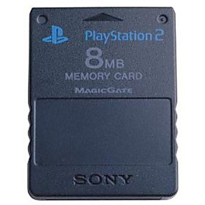

I have played the Xbox 360 for the past few weeks now, and that is my inspiration to make this website. I am not a pro gamer, but I occasionally play video games. And I think that is enough for me to talk about the Xbox 360.

| Date released: | November 22, 2005 |
|---|---|
| Date disconnected: | April 20, 2016 |
| Number of games: | 1,233 |
| Information for this table was provided by Wikipedia. |
This picture was on the GameStop online store.
I remember when I was a kid, I wanted to get a Xbox 360, but never got one. During the Christmas of 2013, my oldest brother bought a white Xbox 360 Slim and I was super excited. He didn't actually tell me that we are going to get a Xbox 360, but I found out about it. During that time, I remember seeing Xbox 360 games mailed to our mailbox. I was confused at first, but then I start to come up with an idea that my oldest brother bought a Xbox 360. When my family got the Xbox 360, the first game I got was Skylander Spyro's Adventure. Even though that my family have a Xbox 360, I didn't actually used the console alot. Even after how much I want a Xbox, I didn't play it offen. Part of it is because my oldest brother was going to college so he brought the Xbox with him.


Here is the pictures of my first Xbox 360 game. I got these pictures from Amazon.com.
Right now, I am trying to play my Xbox as much as possbile because I want to make up for all the time I didn't play it. I have a decent game collection that I can't wait to play all the games that I have. It might take awhile though. In term of the console itself, I think it's healthy. It's not making too much noise and the console is not slow. I found out I can clear the cache on the console, so hopefully, it can speed up the console. The Xbox is collecting some dust and I should clean it.
| Date released: | October 26, 2000 in North America |
|---|---|
| Date disconnected: | January 4, 2013 |
| Number of games: | 2,519 |
| Information for this table was provided by Wikipedia. |
When I was a kid, I loved the Playstation 2. I remember one time I woke up with my brother before the sunrise and we played WWE Smackdown vs Raw 2008. My parents were going somewhere and me and my brother played the PS2 in our tent, and the PS2 was connected to a T.V outside the tent. We weren't camping, where I was born, there was tons of mosquitos so you have to sleep in tents that will keep the mosquitos from sucking your blood. I am not sure what me and my brother were doing in WWE, but I think we were making our own wrestlers. Making our own wrestlers were the best part of the game.


Here is the cover of WWE Smachdown vs Raw 2008. I got the left image from Emuparadise. I got the right image from GameSpot.
Another memory I had was trouble with the memory card. When you play games with the PS2, you had to save your game progress with the memory card. My brother and I treasured the memory card because it was so important to play games with on the PS2. I wonder if you can keep the memory card inserted into the system without taking it out. If you can keep the memory card in the console, I wish I knew that because I lost the memory card so many times. I think my oldest brother had to buy three or four memory card. I think it's funny how we buy memory card because we lost it not that we need more space for our game saves. Without a memory card, me and my brother still played games on the PS2 anyway. When my brother and I played this game called Ben 10 Protector of Earth we had to restart the story mulipte times. We don't get the save the game so many times that I forgot there was a save feature. The only time we finished the game was when we had a memory card.
I got this picture from a website called Luckie Games. I think this was the memory card I had. I didn't notice the memory card had so little space on it.
| Date released: | March 28, 2010 in North America |
|---|---|
| Date disconnected: | Unknown |
| Number of games released: | 1,863 |
| Information for this table was provided by Wikipedia. |
I have a Nintendo DSi XL. I don't play it anymore though because my only game card doesn't work. I used the DS to play one game. The game was Pokemon Black. Here is a link to a Wiki page on this game. Looking back now, my DS was my source of video games because I didn't play my Xbox when Pokemon Black still work. My oldest brother gave me the DSi. I think he gave it to me because he was going to college and he didn't want to bring too much stuff. This was also my first DS. When I was a kid, I wanted a DS, and when I was around thirteen, I got one. My parents bought me and my brother to their friend's house, and over there, my parents' friend had a daught who was about my age. She had a white DS and I thought it was super cool. She was around my age, I think and she had her own DS. Now back then, I didn't know that was a DS so after me and my family left the house, I didn't think about the DS too much. As I grew older, I when to school, at the school there was this kid who was a friend of my and we were having a conversation at lunch he asked me if I wanted a DS because he is going to America and he can get me one. I told him to get me one because I always wanted one. So he told me that he will try to get me a DS and went to class feeling excited. I even told my brother about this. So he went to America on a vaction and I just waited for him to get back so I can get my DS.